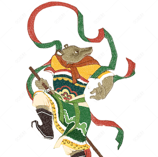
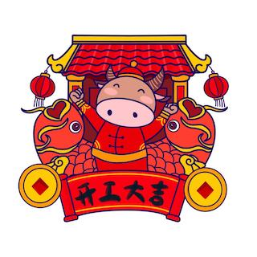
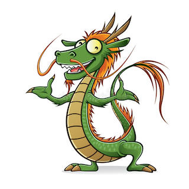
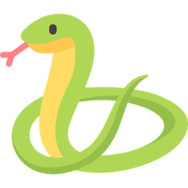
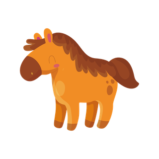
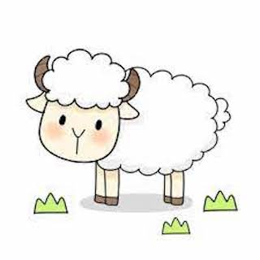
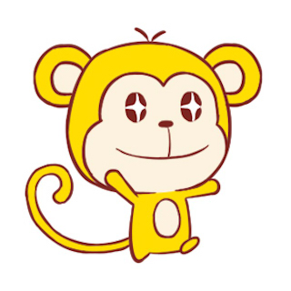
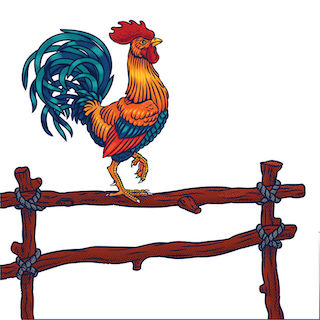
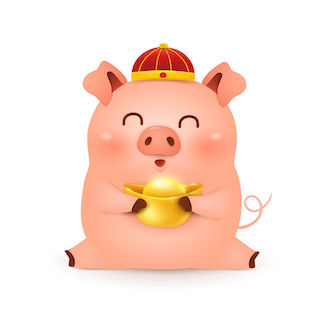

Zodiac Animals
Each year in the Lunar calendar is represented by one of 12 zodiac animals included in the cycle of 12 stations or “signs” along the apparent path of the sun through the cosmos. In addition to the animals, five elements of earth, water, fire, wood and metal are also mapped onto the traditional lunar calendar. Each year is associated with an animal that corresponds to an element.
Fun Knowledge About 2022, the Year of Tiger:
2022 is the year of the Tiger. The recent and incoming Tiger years are 1950, 1962, 1974, 1986, 1998, 2010, and 2022. If you were born in one of these years, your Chinese zodiac sign is the Tiger which is associated with strength, bravery, and exorcising evils. 2010 was a Gold Tiger year, and 2022 is a Water Tiger year, which only occurs every 60 years. People born in a year of the Tiger will experience their zodiac year (Ben Ming Nian) in 2022, which is considered bad luck. It is believed that wearing red will bring them good luck.
*Learn more about Chinese Zodiac and which zodiac you belong to, go to Chinese Zodiac Website

Rat |

Ox |
Tiger |
Rabit |

Dragon |

Snake |

Hourse |

Sheep |

Monkey |

Rooster |
Dog |

Pig |